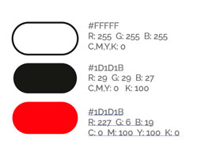

DISEÑO
paleta cromática
Los colores son en base al capítulo. Lo moderno y lo minimalista.
El blanco que representa las nuevas tecnologías y por otra parte, el rojo que hace referencia a Netflix, por más que no esté presente.

Valentina Sosa Junco
DISEÑO
paleta cromática
Los colores son en base al capítulo. Lo moderno y lo minimalista.
El blanco que representa las nuevas tecnologías y por otra parte, el rojo que hace referencia a Netflix, por más que no esté presente.
tipografía
Moderna, neutra y elegante. Es minimalista y cómoda para que el usuario pueda leerla.
También se utilizó la tipografía ARCADE CLASSIC que representa el capítulo de videojuegos y resulta ser más atractivo u divertido.